Produkty GMO
- 1.Kukurydza GMO: Kukurydza genetycznie modyfikowana została zmodyfikowana w celu zwiększenia odporności na szkodniki i choroby, co przyczynia się do większych plonów.
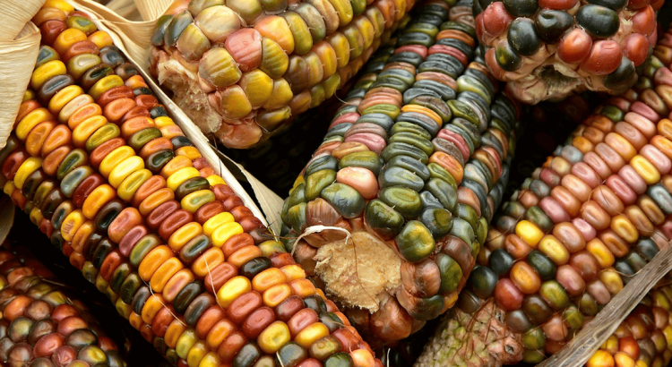
- 2.Soja GMO: Soja genetycznie modyfikowana jest często modyfikowana w celu zwiększenia tolerancji na herbicydy, co ułatwia kontrolę nad chwastami. Modyfikacje genetyczne mogą również wpływać na zawartość białka czy wartość odżywczą soi.
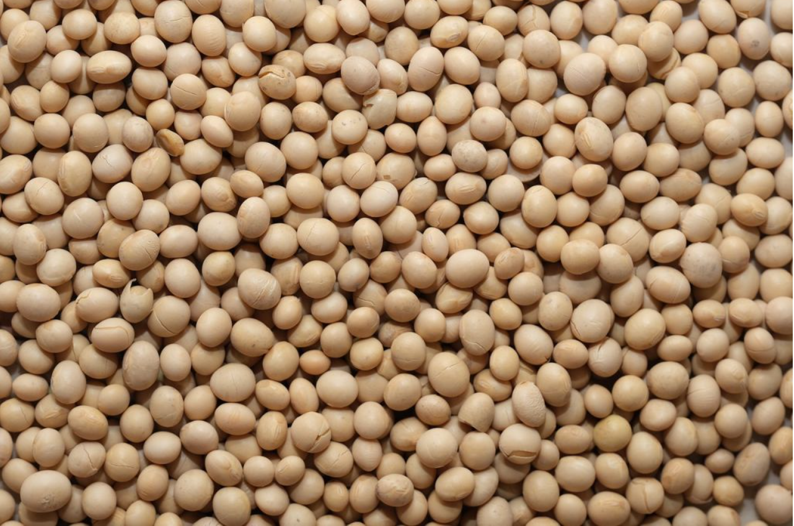
- 3.Rzepak GMO: Rzepak genetycznie modyfikowany może mieć zmienioną zawartość tłuszczu, co ma znaczenie w produkcji oleju rzepakowego. Modyfikacje genetyczne rzepaku mogą być stosowane w celu poprawy jakości oleju, zmniejszenia zawartości nasyconych kwasów tłuszczowych czy zwiększenia odporności na choroby.
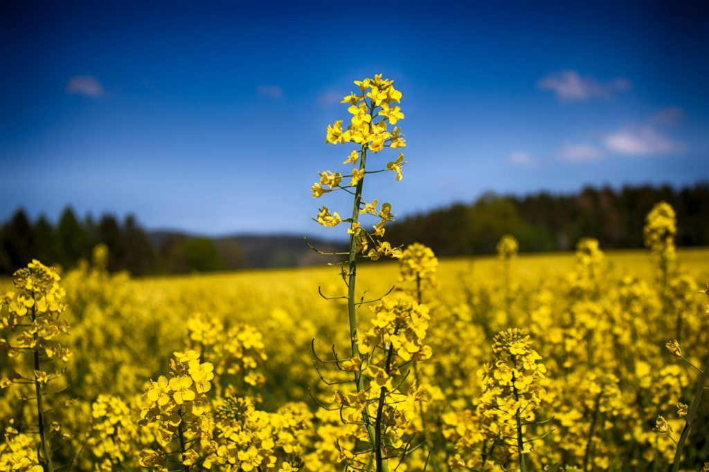
- Ziemniaki GMO: Ziemniaki genetycznie modyfikowane mogą mieć zwiększoną odporność na choroby, takie jak zaraza ziemniaczana, co pomaga w ochronie plonów. Modyfikacje genetyczne ziemniaków mogą również wpływać na cechy takie jak wydajność, kształt czy zawartość skrobi.
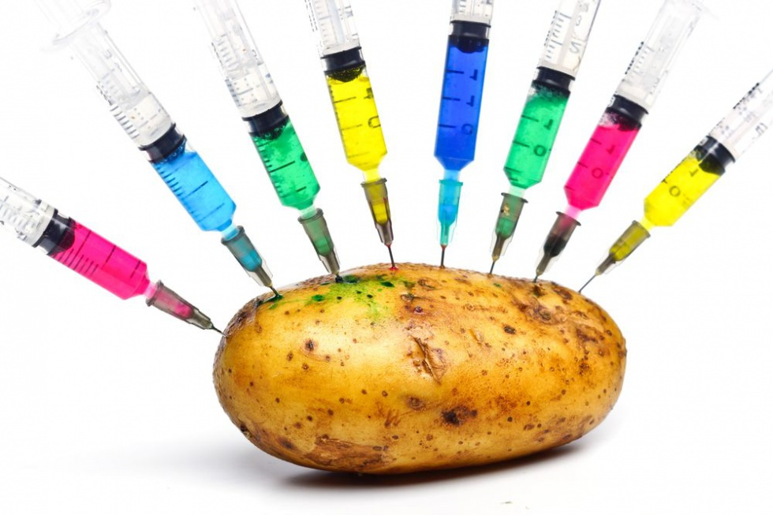
- 5. Pomidory GMO: Pomidory genetycznie modyfikowane mogą mieć wydłużony okres przechowywania, dzięki czemu są bardziej trwałe i mniej podatne na uszkodzenia.
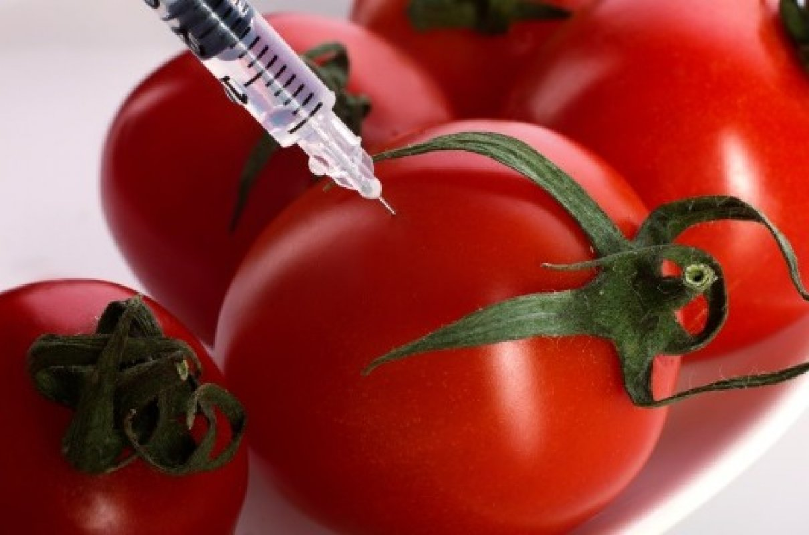
- 6.Jabłka GMO: Jabłka genetycznie modyfikowane mogą mieć zmienioną skórkę lub wydłużony okres przechowywania, co wpływa na ich trwałość i wygląd. Dodatkowo, modyfikacje genetyczne mogą być stosowane w celu poprawy smaku i wartości odżywczych jabłek, co przyczynia się do zwiększenia atrakcyjności owoców dla konsumentów.
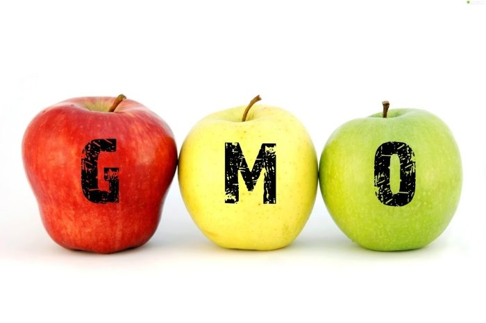
- 7.Pszenica GMO: Pszenica genetycznie modyfikowana może mieć zwiększoną tolerancję na suszę lub odporność na choroby, co przyczynia się do większych plonów. Modyfikacje genetyczne pszenicy ukierunkowane są na poprawę wytrzymałości roślin na niekorzystne czynniki środowiskowe oraz zwiększenie zawartości białka i składników odżywczych.
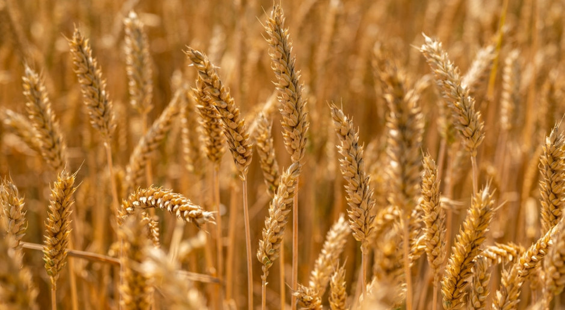
- 8.Ryż GMO: Ryż genetycznie modyfikowany może mieć zwiększoną zawartość witamin lub odporność na szkodniki, co ma znaczenie dla zdrowia i plonów. Modyfikacje genetyczne ryżu mogą być ukierunkowane na poprawę wartości odżywczych, takich jak zawartość witaminy A czy żelaza, co przyczynia się do walki z niedożywieniem w krajach, gdzie ryż stanowi główne źródło pożywienia.
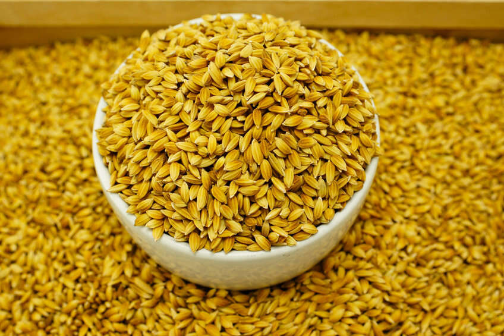
- 9. Buraki cukrowe GMO: Buraki cukrowe genetycznie modyfikowane mogą mieć zwiększoną zawartość cukru lub odporność na choroby, co przyczynia się do lepszej jakości i wydajności produkcji cukru.
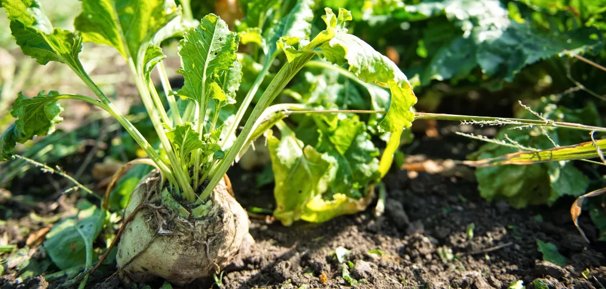
- 10.Marchew GMO: Marchew genetycznie modyfikowana może mieć zmienioną zawartość składników odżywczych lub odporność na szkodniki, co wpływa na jej wartość i plony. Celem modyfikacji genetycznych marchwi jest zapewnienie wysokiej jakości odżywczej oraz zwiększenie plonów przy jednoczesnej redukcji zużycia środków ochrony roślin.
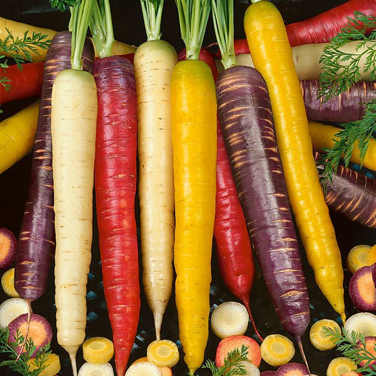
- 11.Arbuz GMO: Arbuz genetycznie modyfikowany może mieć większą odporność na choroby lub zmienioną zawartość składników odżywczych, co przyczynia się do lepszej jakości i trwałości owoców. Modyfikacje genetyczne arbuzów mogą również wpływać na cechy takie jak smak, konsystencja czy wygląd owoców.
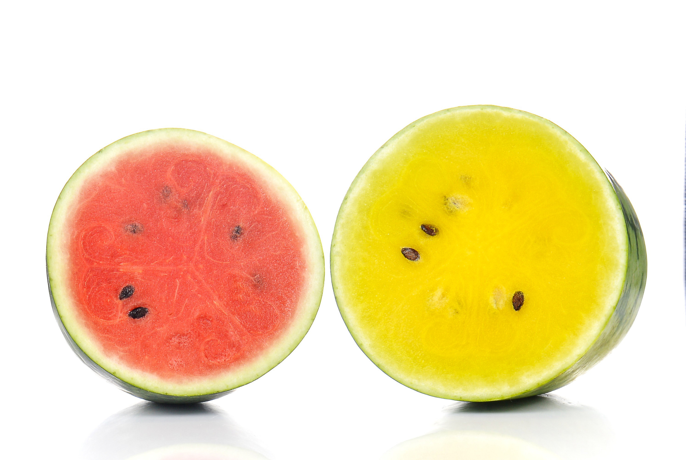
- 12.Kalafior GMO: Kalafior genetycznie modyfikowany może mieć zmienioną barwę lub większą odporność na szkodniki, co wpływa na jego atrakcyjność i plony. Modyfikacje genetyczne kalafiora mogą być stosowane w celu poprawy cech jakościowych, takich jak tekstura czy smak, a także zwiększenia odporności na choroby.
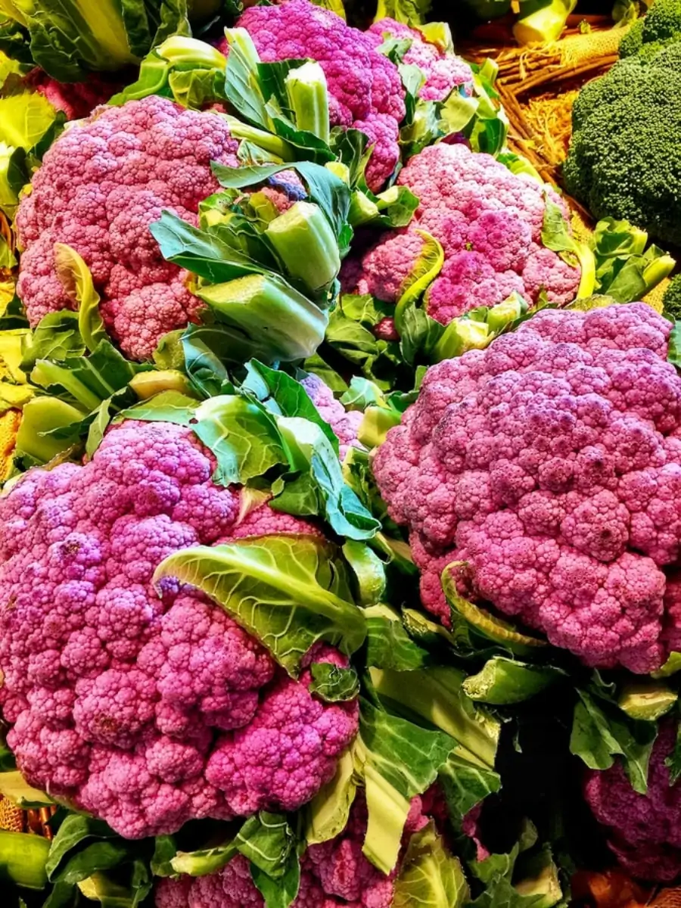
- 13.Papryka GMO: Papryka genetycznie modyfikowana może mieć zmienioną barwę, kształt lub większą odporność na choroby, co przyczynia się do różnorodności i wydajności upraw. Modyfikacje genetyczne papryki mogą również wpływać na zawartość składników odżywczych oraz cechy smakowe.
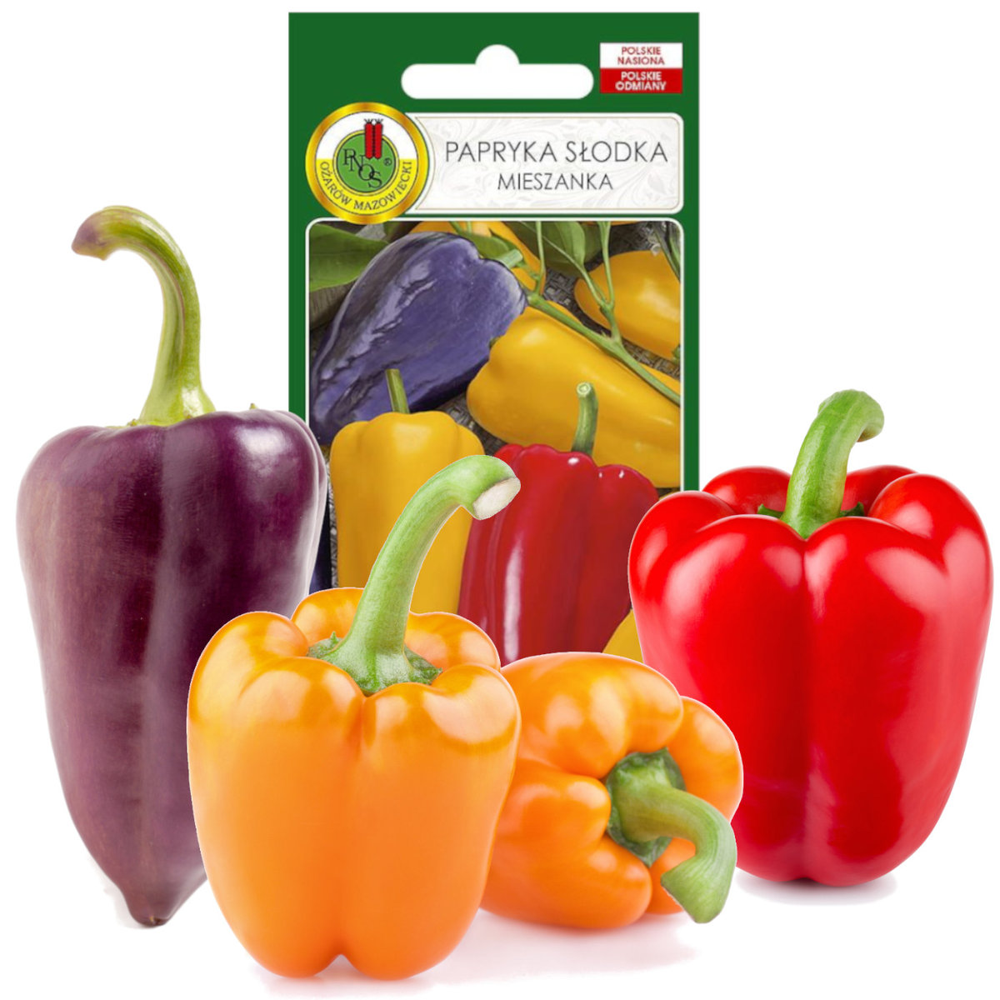
- 14.Cukinia GMO: Cukinia genetycznie modyfikowana może mieć zwiększoną tolerancję na suszę lub odporność na choroby, co przyczynia się do lepszych plonów i zrównoważonej produkcji. Modyfikacje genetyczne cukinii ukierunkowane są na poprawę wytrzymałości na czynniki stresowe oraz cech jakościowych owoców.
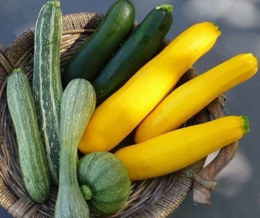
- 15.Jarmuż GMO: Jarmuż genetycznie modyfikowany może mieć zwiększoną zawartość składników odżywczych, takich jak żelazo lub witamina C, co wpływa na jego wartość żywieniową. Modyfikacje genetyczne jarmużu mogą być ukierunkowane na poprawę wartości odżywczych, zwiększenie plonów oraz odporność na szkodniki.
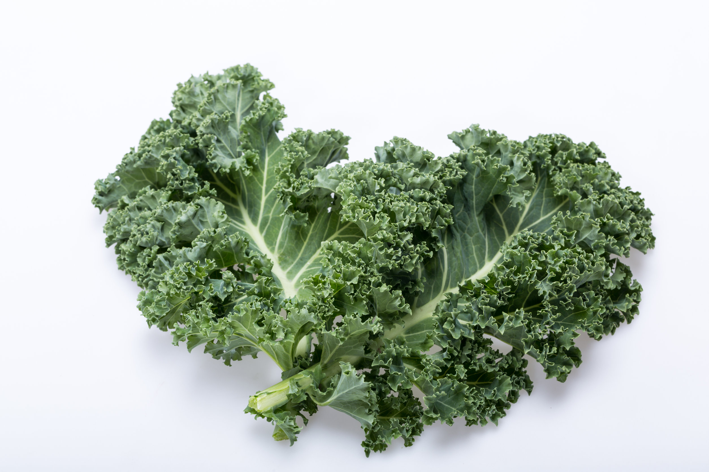